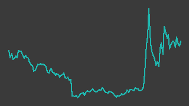

ブレインズテクノロジー（4075）
東証グロース／レポート更新 2026-10-09
IR情報 ↗ニュース（会社） ↗株探 ↗

画像判定※・6か月・基準日 2026-10-09一行でいうと：異常検知AI「Impulse」と企業内検索「Neuron ES」を売る東証グロースのAIソフト会社。2026年7月期は営業利益2.5億円✓（前期比+51%）と伸びたが、今期の会社計画は営業横ばい（2.5億円✓）・最終減益。株価は「フィジカルAI」の発表を材料に3月と8月末〜9月に急騰を繰り返しており、業績より材料で動いている局面と読める。
週次アップデート最新 2026-W41・全 3 件
新しい週を上に置いている。過去の記述は書き換えず、そのまま残している。
2026-W41（2026-10-05 週）
定時株主総会の招集通知を開示した週で、株価はほぼ横ばいだった。
- 株価: 週間 -0.1%（1430→1428円・採用終値ベース、照合成立 5日、週内 1366〜1475円）
- 出来高: 前週比 -61.9%（今週 623,600株／前週 1,635,600株）※／信用倍率: 289倍（買残 289.5千株・売残 1千株、10/02時点）※
- 判定: 「様子見(過熱)」／開示: なし
- ニュース: 10/07 2026年定時株主総会招集通知及び株主総会資料 株探 ↗
- ニュース: 10/07 2026年定時株主総会その他電子提供措置事項（交付書面への記載を省略した事項） 株探 ↗
（解釈）10/7 に定時株主総会の招集通知と電子提供措置事項が開示された。業績に関わる開示ではない。 出来高は前週比 −61.9% と細り、急騰後の値固めの局面と読める。信用倍率は 289倍と買残に偏っている※。
次週に見ること: ① 株主総会の開催と議案の結果 ② 買残の推移
2026-W40（2026-09-28 週）
「Neuron ES」の Garoon 連携を開示。株価は小幅安。
- 株価: 週間 -1.9%（1458→1430円・採用終値ベース、照合成立 5日、週内 1348〜1496円）
- 出来高: 前週比 -24.3%（今週 1,635,600株／前週 2,160,500株）※／信用倍率: 259倍（買残 337.1千株・売残 1.3千株、09/25時点）※
- 判定: 「様子見(過熱)」／開示: なし
- ニュース: 09/30 企業内検索システム「Neuron ES」、 Garoon 導入企業の社内ナレッジ活用を AI で継続的に支援 株探 ↗
（解釈）9/30 に企業内検索システム「Neuron ES」の Garoon 導入企業向け支援の開示が出ている。製品連携の発表で、業績数値の開示ではない。 信用倍率は 259倍と売残がほぼ無い状態で、急騰後の買い残が積み上がったままと読める。screen.py は会社計画の伸び +5% 未満（PLAN_FLAT）を警告している。
次週に見ること: ① 信用買い残の推移 ② 適時開示の有無
2026-W39（2026-09-21 週）
監視開始の週。前週のストップ高（9/18）の後、祝日明けの2営業日で終値1591円→1458円（-8.4%）に押し戻された。
- 2026-09-27、楽天証券のスクリーニング（成長株0830・per）通過を起点に監視対象に登録した（
data/master.yamlの watch_reason） - 今週は9/21〜23が祝日で、取引は9/24・9/25の2日。採用終値は9/24が1537円✓、9/25が1458円✓。この週に会社の新しい開示は見当たらない（会社ニュース一覧 https://www.brains-tech.co.jp/news/ 、株探ニュース一覧 https://kabutan.jp/stock/news?code=4075 、いずれも2026-09-27取得）。下げた理由は特定できていないが、前週（9/14〜18）に1204円→1591円（+32%）と急伸した反動の可能性がある
- 前週9/18は前日比+300円（1291円→1591円）で、株探の「本日の【ストップ高／ストップ安】(9月18日)」に名前が載った（二次情報・https://kabutan.jp/stock/news?code=4075&b=n202609180830 、見出しのみ確認・2026-09-27取得）
- 信用買い残※は9/18時点で330.3千株と、8/28時点の119.2千株から約2.8倍に膨らんだ（株探・https://kabutan.jp/stock/?code=4075 、2026-09-27取得）。急騰局面で積み上がった買い残は、先々の売り圧力になりうると読める
- 登録時点の screen.py は PLAN_FLAT（会社計画の営業増益率が+5%未満）を出している。直近4Qの営業利益は前年同期比+168%✓と強いが、会社自身は今期を横ばいと見ている。この警告が消えるまで「有望」とは書かない
次週に見ること：①1458円からさらに押すか（9/14の1155円✓が直近の押し目） ②信用買い残※の増減 ③フィジカルAI関連の追加開示（受注・導入事例）の有無
次期売上・利益推定対象 FY2027-07・作成済み・変数 7 個
作成済み 対象期 FY2027-07・起案 2026-09-27。検証済みデータと明示した仮定から機械計算した概算であり、会社計画でも的中予想でもない。推定 の付いた変数を疑うための頁。
会社計画・市場予想・実績との比較（百万円）
| 指標 | 前期実績 | 会社計画 | 市場予想 | 当台帳推定 | 市場予想比 |
|---|---|---|---|---|---|
| 売上 | 1,433 | 1,707 | — | 1,596 | — |
| 営業利益 | 250 | 250 | — | 208 | — |
市場予想: 未確認。みんかぶの証券アナリスト予想ページ（https://minkabu.jp/stock/4075/analyst_consensus、2026-09-27取得試行）は HTTP 403 で本文を読めず、コンセンサスの有無を確かめられていない。売上 14億円規模のグロース銘柄でカバーは薄いと見るが推測。 比較対象は会社計画のみ
計算の分解
| セグメント | 式（値を代入） | 売上（百万円） |
|---|---|---|
| ストック売上（利用料＋保守。ライセンス数×1本当たり年間売上） | 495 × 1.03 = 509.85 | 510 |
| 買取ライセンス売上（前期×伸び） | 458 × 1.2 = 549.6 | 550 |
| サービス売上（導入・構築・カスタマイズ等。前期×伸び） | 488 × 1.1 = 536.8 | 537 |
変数と根拠
カードを押すと、その値の置き方（メモ・出典）が開く。推定 の変数から疑うこと。
ストック売上（利用料＋保守。ライセンス数×1本当たり年間売上）stock_licenses495推定
ストック売上（利用料＋保守。ライセンス数×1本当たり年間売上）revenue_per_stock_license1.03推定
買取ライセンス売上（前期×伸び）perpetual_prev458開示（一次）
買取ライセンス売上（前期×伸び）perpetual_growth1.2推定
サービス売上（導入・構築・カスタマイズ等。前期×伸び）service_prev488開示（一次）
サービス売上（導入・構築・カスタマイズ等。前期×伸び）service_growth1.1推定
全社op_margin0.13推定
感度 — この推定を最も動かす変数
各変数を +10% したときの営業利益の変化。上にある変数ほど、根拠を厚く確かめる価値がある。ただし op_margin だけは別扱い——営業利益 = 売上合計 × op_margin なので +10% は定義上つねに +10% になり、売上側の変数と大小を比べても意味が無い。
| 変数 | セグメント | 営業利益への影響 |
|---|---|---|
op_margin | 全社 定義上 | +10.0% 乗法モデルなので定義上つねに +10%。売上側の変数との大小比較には意味が無い（率の水準そのものを疑うこと） |
perpetual_growth | 買取ライセンス売上（前期×伸び） | +3.4% |
perpetual_prev | 買取ライセンス売上（前期×伸び） | +3.4% |
service_growth | サービス売上（導入・構築・カスタマイズ等。前期×伸び） | +3.4% |
service_prev | サービス売上（導入・構築・カスタマイズ等。前期×伸び） | +3.4% |
revenue_per_stock_license | ストック売上（利用料＋保守。ライセンス数×1本当たり年間売上） | +3.2% |
推定の変遷
過去の版は書き換えずに残す。数値感がどう変わってきたかが学習の履歴になる。
| 起案日 | 対象期 | 売上 | 営業利益 | 何を変えたか |
|---|---|---|---|---|
| 2026-09-27 | FY2027-07 | 1,596 | 208 | 初版（Claude 起案・人間未確認）。報告セグメントは単一（エンタープライズAIソフトウェア事業。Neuron ES＝企業内検索、 Impulse＝製造業向け異常検知）だが、会社が決算説明資料で売上を『ストック（利用料＋保守）』『買取ライセンス』 『それ以外（導入・構築・カスタマイズ等のサービス）』に分けて比率を開示しているので、この3区分で切った。 7月決算で 2026-09-11 に本決算が出たばかり（今期の四半期実績はまだ無い）。前期（FY2026-07）実績は売上 1,433・営業利益 250 （fundamentals の採用値）。会社計画は売上 1,707（+19.1%）・営業利益 250（±0%）で、オフィス移転・給与テーブル改定・ AIエージェント／フィジカルAI への投資で費用が大きく増える前提（決算説明資料 p.46、https://www.release.tdnet.info/inbs/140120260911534973.pdf、 2026-09-27取得）。前期は売上が計画 1,510 に対し 94.9% と未達、費用が計画を下回って利益だけ超過した。 推定は売上・営業利益とも会社計画を下回る。12月の1Q決算で置き直す前提 |
会社概要この会社は何者か・財務の推移と健全性・今後の展望とリスク・値動きと市場の評価・出典・検証の記録
この会社は何者か
- 事業：企業のDXに使うAIを製品として売る「エンタープライズAIソフトウエア事業」の単一セグメント・非連結（決算短信）。2026年7月期末の従業員は70名
- 2つの主力製品（いずれも会社発表）
- Impulse：センサー・音声・画像・動画から異常を検知するAI。2014年のリリース以来、製造現場を中心に累計3.5万を超えるAIモデルが稼働しているという。設備の故障予兆、不良品検出、作業分析に使われる
- Neuron ES：企業内の文書を横断検索する全文検索システム。生成AI連携（Chat EI）やMicrosoft 365 Copilotからの検索（MCP対応）を足している。ITトレンドのエンタープライズサーチ部門で9年連続1位と会社は発表している
- 新しい柱として打ち出しているもの＝フィジカルAI：Impulseで培った画像認識とロボット基盤モデルを組み合わせ、ロボットに製造現場の作業をさせる領域。2026年3月に人型ロボットによる製造現場自働化の実証結果を公表し、同月にアイシンと共同でAWSジャパンの「フィジカルAI 開発支援プログラム」に採択された。8月28日には工程選定から現場実装・運用定着まで請け負う「フィジカルAI 現場実装・ロボット導入支援サービス」を始めた
- 株探が「比較される銘柄」に挙げているのはABEJA、フレクト、TDSE（二次情報）
財務の推移と健全性
出所: data/fundamentals/4075.csv の採用値（別サイト2つ以上が一致した値だけ）。12/12点を採用。
売上高は2016年7月期の1.3億円✓から2026年7月期の14.3億円✓まで、2024年7月期（10.0億円✓）を除いて毎年伸びてきた。
| 期 | 売上高（百万円） | 営業利益（百万円） | 当期純利益（百万円） |
|---|---|---|---|
| 2023年7月期 | 1053 | 163 | 122 |
| 2024年7月期 | 1004 | 73 | 48 |
| 2025年7月期 | 1255 | 165 | 133 |
| 2026年7月期 | 1433 | 250 | 192 |
| 2027年7月期（会社計画） | 1707 | 250 | 173 |
表の数値はすべて2ソース照合済みの採用値。
- 2026年7月期：売上+14.1%に対し営業利益+50.9%。決算短信によれば、人員減少や外注費の削減で売上原価が前期より減り、売上総利益が+24.2%伸びた。一方で、フィジカルAIやAIエージェントの研究開発費を中心に販管費が増えている。営業利益率は17.5%✓（前期13.2%※）
- 四半期の勢い（下図。単独3か月の営業利益）：26/7期は1Q -27百万円✓（前年同期 -62百万円✓）、2Q 99百万円✓（同55百万円✓）、3Q 60百万円✓（同128百万円※）、4Q 118百万円✓（同44百万円✓）。3Qは前年同期を下回った（前年3Qの値は2ソースが一致しておらず※）。直近の1Q（8〜10月）は2年続けて営業赤字で、期初が弱く期末に寄る季節性があると読める
出所: data/fundamentals/4075.csv の採用値（別サイト2つ以上が一致した値だけ）。7/8点を採用、欠測 2〜4月(2025)（照合が成立していない（MISMATCH））。
- 健全性：2026年7月期末の自己資本比率は78.2%✓、現金及び現金同等物は16.8億円✓、総資産は23.6億円✓。営業キャッシュフローは4.3億円✓で当期純利益（1.9億円✓）を上回る（減価償却費2.1億円が大きい。決算短信）。財務活動は新株予約権の行使による収入だけで、借入の記載はない
- 1株指標・還元：EPSは33.00円※（決算短信の記載値。台帳では2ソースが不一致）、1株当たり純資産は315.48円✓。無配で、2027年7月期も無配予想（決算短信）
今後の展望とリスク
- 会社計画（2027年7月期）：売上高17.1億円✓（+19.1%）、営業利益2.5億円✓（+0.0%）、当期純利益1.7億円✓（-9.9%）。売上は2割伸ばすが利益は横ばい〜減益という計画で、増える粗利をフィジカルAI等の研究開発と採用に回す前提と読める（assumed: true。根拠＝前期の販管費増が研究開発費中心だったと決算短信にあり、今期見通しの文面も「優秀な人材の採用およびソフトウェアの開発を推し進める」としているため。費目別の計画値は確認していない）
- 上振れの芽：フィジカルAIの導入支援が受注として積み上がれば、横ばい計画を上回る余地がある。ただし現時点で受注額・案件数の開示は確認できていない
- リスク
- 利益計画が横ばいで、screen.py の PLAN_FLAT に該当する。業績の伸びより「フィジカルAI」という話題で株価が動いている
- 1Qが営業赤字になりやすい季節性。次の1Q（2026年8〜10月）の開示で赤字が出ても、それ自体は例年どおりの可能性がある
- 急騰後の信用買い残※の増加（週次アップデート参照）
- 小型株で、材料が出ない日の出来高※が数千株まで細る日がある（2026年8月下旬）
値動きと市場の評価
出所: data/prices/daily.csv の採用終値（2つの取得元が一致した終値だけ）。ザラ場の高値・安値は照合を通っていないので使っていない。245/245点を採用、52週の採用終値 241営業日、出来事 4/4件を配置。
- 52週の採用終値レンジ：安値796円✓（2026-03-04）〜高値1861円✓（2026-03-18）。直近は1458円✓（2026-09-25）で高値の約78%
- 3月の急騰：人型ロボット実証の公表（3/5）の翌日から上げ始め、3/6・3/9は前日比+150円の上げ幅で出来高※が2万株前後と小さく、買い気配のまま値が付きにくいストップ高型の上げだったと読める。AWSプログラム採択（3/17）で1818円✓、翌3/18に1861円✓の高値を付けた後、7月末には824円✓まで戻した
- 8月末〜9月の急騰：フィジカルAI導入支援サービスの開始発表（8/28・金）の後、8/31に1087円✓（+150円）、9/1に1387円✓（+300円）、9/3に1780円✓。9/11の通期決算（今期営業横ばい計画）前後は1155〜1204円✓まで押し、9/15に急反発（株探は「フィジカルＡＩ関連で頭角現す」と報じた）、9/18にストップ高で1591円✓
- バリュエーション（株探・2026-09-27取得、いずれも※）：時価総額87.1億円、PER 49.3倍、PBR 4.62倍、信用倍率18.15倍
出典
凡例: ✓=2ソース照合済みの採用値 ／ ※=未照合・参考値 ／ †=決算短信（一次情報）から直接
一次情報
| 資料 | URL | 取得日 |
|---|---|---|
| 2026年7月期 決算短信（非連結・2026-09-11） | https://tdnet-pdf.kabutan.jp/20260911/140120260911534968.pdf | 2026-09-27 |
| 会社ニュース一覧 | https://www.brains-tech.co.jp/news/ | 2026-09-27 |
| フィジカルAI 現場実装・ロボット導入支援サービス 提供開始（2026-08-28） | https://www.brains-tech.co.jp/news/20260828_01-2/ | 2026-09-27 |
| 人型ロボットによる製造現場自働化の実証結果（2026-03-05） | https://www.brains-tech.co.jp/news/20260305_1/ | 2026-09-27（一覧で見出しのみ確認） |
| アイシンと共同でAWSジャパン「フィジカルAI 開発支援プログラム」に採択（2026-03-17） | https://www.brains-tech.co.jp/news/20260317_01/ | 2026-09-27（一覧で見出しのみ確認） |
| Neuron ES、ITトレンド9年連続1位（2026-02-18） | https://www.brains-tech.co.jp/news/20260218/ | 2026-09-27（一覧で見出しのみ確認） |
| Neuron ES、MCPサーバー対応（2026-05-29） | https://www.brains-tech.co.jp/news/20260529/ | 2026-09-27（一覧で見出しのみ確認） |
二次情報
| 資料 | URL | 取得日 |
|---|---|---|
| 株探 銘柄ページ（時価総額・PER・PBR・信用残・比較銘柄） | https://kabutan.jp/stock/?code=4075 | 2026-09-27 |
| 株探 ニュース一覧 | https://kabutan.jp/stock/news?code=4075 | 2026-09-27 |
| 株探「ブレインズ、今期最終は10％減益へ」（2026-09-11） | https://kabutan.jp/stock/news?code=4075&b=k202609110048 | 2026-09-27 |
| 株探（MINKABU PRESS）「ブレインズが２０％超の急騰演じる、フィジカルＡＩ関連で頭角現す」（2026-09-15） | https://kabutan.jp/stock/news?code=4075&b=n202609150280 | 2026-09-27 |
| 株探「本日の【ストップ高／ストップ安】(9月18日)」 | https://kabutan.jp/stock/news?code=4075&b=n202609180830 | 2026-09-27（見出しのみ確認） |
財務数値・株価の採用値は data/fundamentals/4075.csv と data/prices/daily.csv、信用残は data/margin/4075.csv。
未確認
- 次回（2027年7月期1Q）の決算発表日。
master.yamlの各項目（fiscal_year_end・ir_url など）もまだ TO_VERIFY - 2025年7月期3Qの営業利益（128百万円※）。2ソースが一致していない
- 売上のうちストック（ライセンス・保守）とフロー（導入・受託）の比率
- フィジカルAI事業の受注額・案件数（開示を確認できていない）
- 代表者名の表記が資料で異なる（決算短信は「齋藤 佐和子」、8/28のリリースは「濱中佐和子」）。同一人物の旧姓・通称の違いと見られるが確認していない（assumed: true）
- 8/31・9/1の出来高※が1万株前後と小さいのが、ストップ高張り付きによるものか取得側の問題かは確かめていない
記述の裏取り
本文の記述を、書いたのとは別の文脈が出典URLを取り直して1件ずつ判定した結果（読み方）。
検証日 2026-09-27検証した記述 43裏付けあり 31この出典では確かめられない（別の出典が要る） 3確かめられない（到達不可・出典なし） 9再取得した出典 13
裏が取れなかった記述
出典を取り直しても確かめられなかったもの。本文に残っているが、確認済みとして読んではいけない。
| 判定 | 本文の記述 | 再取得して分かったこと | 出典 | どうするか |
|---|---|---|---|---|
| 確かめられない（到達不可・出典なし） | 2026-09-27、楽天証券のスクリーニング（成長株0830・per）通過を起点に監視対象に登録した | 根拠として示されているのは data/master.yaml の watch_reason だが、検証の隔離範囲外（D18）で開いていない。出典URLなし。 | 出典なし — | 隔離の外にあるため検証者は確かめない。人間が master.yaml と照合する |
| 確かめられない（到達不可・出典なし） | 企業のDXに使うAIを製品として売る「エンタープライズAIソフトウエア事業」の単一セグメント・非連結（決算短信）。2026年7月期末の従業員は70名 | 決算短信PDFは再取得（200・application/pdf）したが fetch_source.py はテキスト化しない。data/tanshin/4075.csv は存在しない。確かめる材料が無い。 参考: 株探記事（MINKABU PRESS・200）に「エンタープライズＡＩソフトウェア事業」、株探決算記事に「【非連結】」はあるが、単一セグメント・従業員70名の記載は無い。 | 一次情報 出典 ↗ | src/fetch_tanshin.py で 4075 の決算短信を data/tanshin/4075.csv に取り込み、次の verify で照合する（それまで本文は「未確認」扱い） |
| この出典では確かめられない（別の出典が要る） | 売上+14.1%に対し営業利益+50.9% | 採用値からは 1433/1255-1=+14.2%、250/165-1=+51.5%（screen.py 通期 +51.5%）。株探決算記事（200）「前年比 | +14.2 | +51.5 | +53.6 | +44.4」。+14.1%/+50.9% は百万円未満の端数を使えば起こりうる範囲（営業 249.5/165.5〜250.5/164.5 ⇒ +50.8〜+52.3%）だが、その値を示す出典（決算短信PDF）はテキスト化できず確かめられない。 | 検証済みデータdata/fundamentals/4075.csv 出典 ↗ src/screen.py | 採用値どうしの比（+14.2%/+51.5%）に揃えるか、決算短信の増減率を data/tanshin に取り込んでから引く |
| 確かめられない（到達不可・出典なし） | 人員減少や外注費の削減で売上原価が前期より減り、売上総利益が+24.2%伸びた | 決算短信PDFは再取得（200・application/pdf）したが fetch_source.py はテキスト化しない。data/tanshin/4075.csv は存在しない。確かめる材料が無い。 | 一次情報 出典 ↗ | src/fetch_tanshin.py で 4075 の決算短信を data/tanshin/4075.csv に取り込み、次の verify で照合する（それまで本文は「未確認」扱い） |
| 確かめられない（到達不可・出典なし） | フィジカルAIやAIエージェントの研究開発費を中心に販管費が増えている | 決算短信PDFは再取得（200・application/pdf）したが fetch_source.py はテキスト化しない。data/tanshin/4075.csv は存在しない。確かめる材料が無い。 | 一次情報 出典 ↗ | src/fetch_tanshin.py で 4075 の決算短信を data/tanshin/4075.csv に取り込み、次の verify で照合する（それまで本文は「未確認」扱い） |
| 確かめられない（到達不可・出典なし） | 減価償却費2.1億円が大きい。決算短信 | 決算短信PDFは再取得（200・application/pdf）したが fetch_source.py はテキスト化しない。data/tanshin/4075.csv は存在しない。確かめる材料が無い。 data/fundamentals に減価償却費の項目は無い。 | 一次情報 出典 ↗ | src/fetch_tanshin.py で 4075 の決算短信を data/tanshin/4075.csv に取り込み、次の verify で照合する（それまで本文は「未確認」扱い） |
| 確かめられない（到達不可・出典なし） | 財務活動は新株予約権の行使による収入だけで、借入の記載はない | 決算短信PDFは再取得（200・application/pdf）したが fetch_source.py はテキスト化しない。data/tanshin/4075.csv は存在しない。確かめる材料が無い。 採用値 FY2026-07 financing_cf=11（OK）は収入超過と矛盾しないが、内訳（新株予約権の行使のみ）までは確かめられない。 | 一次情報 出典 ↗ | src/fetch_tanshin.py で 4075 の決算短信を data/tanshin/4075.csv に取り込み、次の verify で照合する（それまで本文は「未確認」扱い） |
| この出典では確かめられない（別の出典が要る） | EPSは33.00円※（決算短信の記載値。台帳では2ソースが不一致） | FY2026-07 eps は MISMATCH（kabutan 33 / irbank 32.87）で採用値なし。株探決算記事（200）「実 2026.07 | 1,433 | 250 | 255 | 192 | 33」は二次情報。「決算短信の記載値」であることは短信PDFがテキスト化できず確かめられない。 | 二次情報data/fundamentals/4075.csv 出典 ↗ | 決算短信を data/tanshin に取り込んで短信の記載値を確かめる |
| 確かめられない（到達不可・出典なし） | 今期見通しの文面も「優秀な人材の採用およびソフトウェアの開発を推し進める」としているため | 決算短信PDFは再取得（200・application/pdf）したが fetch_source.py はテキスト化しない。data/tanshin/4075.csv は存在しない。確かめる材料が無い。 株探決算記事（200）に当該文言は無い。 | 一次情報 出典 ↗ 出典 ↗ | src/fetch_tanshin.py で 4075 の決算短信を data/tanshin/4075.csv に取り込み、次の verify で照合する（それまで本文は「未確認」扱い） |
| この出典では確かめられない（別の出典が要る） | {label: "IR情報", url: "https://www.brains-tech.co.jp/ir/", primary: true} | 再取得（200・815字）。本文は「決算短信」「決算説明資料」「有価証券報告書」等のメニューのみで、本文のどの記述も支えていない（目次のみ）。 | 一次情報 出典 ↗ | 一次の欄には個別資料（決算短信・説明資料）のURLを置く |
| 確かめられない（到達不可・出典なし） | | 2026年7月期 決算短信（非連結・2026-09-11） | https://tdnet-pdf.kabutan.jp/20260911/140120260911534968.pdf | 2026-09-27 | | 決算短信PDFは再取得（200・application/pdf）したが fetch_source.py はテキスト化しない。data/tanshin/4075.csv は存在しない。確かめる材料が無い。 決算短信を根拠とする記述（V10・V20・V21・V26・V27・V32）はいずれも確かめられていない。 | 一次情報 出典 ↗ | src/fetch_tanshin.py で 4075 の決算短信を data/tanshin/4075.csv に取り込み、次の verify で照合する（それまで本文は「未確認」扱い） |
| 確かめられない（到達不可・出典なし） | 代表者名の表記が資料で異なる（決算短信は「齋藤 佐和子」、8/28のリリースは「濱中佐和子」） | 8/28リリース（200）「代表取締役：濱中佐和子」は確認。決算短信側の「齋藤 佐和子」は PDF がテキスト化できず確かめられない（本文自身も未確認として掲げている）。 | 一次情報 出典 ↗ 出典 ↗ | src/fetch_tanshin.py で 4075 の決算短信を data/tanshin/4075.csv に取り込み、次の verify で照合する（それまで本文は「未確認」扱い） |
裏付けが取れた記述 31件
| 判定 | 本文の記述 | 再取得して分かったこと | 出典 | どうするか |
|---|---|---|---|---|
| 裏付けあり | 2026年7月期は営業利益2.5億円✓（前期比+51%）と伸びたが、今期の会社計画は営業横ばい（2.5億円✓）・最終減益 | 採用値 FY2026-07 operating_income=250（OK）、FY2025-07=165（OK）。250/165-1=+51.5%→「+51%」。FY2027-07 operating_income_plan=250（OK）、net_income_plan=173 < FY2026-07 net_income=192。株探決算記事の表「前期比 | +19.1 | 0.0 | 0.0 | -9.9」。 | 検証済みデータdata/fundamentals/4075.csv 出典 ↗ | — |
| 裏付けあり | 採用終値は9/24が1537円✓、9/25が1458円✓ | daily.csv 4075: 2026-09-24 close=1537.0 status=OK、2026-09-25 close=1458.0 status=OK。 | 検証済みデータdata/prices/daily.csv | — |
| 裏付けあり | この週に会社の新しい開示は見当たらない | 会社ニュース一覧（200）の最新は「2026/08/31 業務特化型AIエージェント…」で9月の項目なし。株探ニュース一覧（200）の9/21〜25は「26/09/21 19:30 | 特集 | 2026年【後半戦】急騰材料株 ベスト50」のみで「開示」区分の項目なし。 | 一次情報 出典 ↗ 出典 ↗ | — |
| 裏付けあり | 前週（9/14〜18）に1204円→1591円（+32%）と急伸 | daily.csv: 2026-09-11 close=1204（前週末・OK）、2026-09-18 close=1591（OK）。1591/1204-1=+32.1%。起点1204は9/14ではなく前週末9/11の終値（9/14 close=1155）。 | 検証済みデータdata/prices/daily.csv | 起点が前週末終値であることを明記するとよい（任意） |
| 裏付けあり | 前週9/18は前日比+300円（1291円→1591円）で、株探の「本日の【ストップ高／ストップ安】(9月18日)」に名前が載った | daily.csv: 2026-09-17 close=1291、09-18 close=1591（ともにOK）。1591-1291=+300。株探記事（200）本文「ブレインズ <4075> [東証Ｇ] 配分 前日もストップ高。」（見出しだけでなく本文でも確認）。 | 二次情報data/prices/daily.csv 出典 ↗ | — |
| 裏付けあり | 信用買い残※は9/18時点で330.3千株と、8/28時点の119.2千株から約2.8倍に膨らんだ | 株探銘柄ページ（200）「09/18 | 18.2 | 330.3 | 18.15」「08/28 | 0.0 | 119.2 | －」。data/margin/4075.csv も同値。330.3/119.2=2.77倍。単一取得元（※表記は適切）。 | 二次情報 出典 ↗ data/margin/4075.csv | — |
| 裏付けあり | 登録時点の screen.py は PLAN_FLAT（会社計画の営業増益率が+5%未満）を出している | python src/screen.py 4075 の出力「[PLAN_FLAT] 4075 ブレインズテクノロジー — 会社計画の伸びが +5% 未満」、会社計画 +0.0%。 | 検証済みデータsrc/screen.py | — |
| 裏付けあり | 直近4Qの営業利益は前年同期比+168%✓と強い | screen.py「直近Q +168.2%」。採用値 Q2026-05_2026-07=118（OK）、Q2025-05_2025-07=44（OK）、118/44-1=+168.2%。「直近4Q」は第4四半期（単独3か月）の意。直近4四半期合計なら (−27+99+60+118)=250 対 165 で+51.5%。 | 検証済みデータdata/fundamentals/4075.csv src/screen.py | 「直近4Q」を「直近の4Q（5〜7月・単独）」と書くと直近4四半期合計との誤読を防げる（提案） |
| 裏付けあり | 2014年のリリース以来、製造現場を中心に累計3.5万を超えるAIモデルが稼働しているという | 8/28リリース（200）「2014年のリリース以来、製造現場を中心に累計35,000を超えるAIモデルが稼働しており、設備の故障予兆、不良品の検出、作業工程の分析・改善など」。3/5・3/17リリースにも同文。 | 一次情報 出典 ↗ 出典 ↗ 出典 ↗ | — |
| 裏付けあり | 生成AI連携（Chat EI）やMicrosoft 365 Copilotからの検索（MCP対応）を足している | 5/29リリース（200）「Neuron ES」において…「Model Context Protocol（MCP）」に対応したMCPサーバー機能の提供を開始」「Microsoft 365 Copilot…から…検索・参照できる」。ニュース一覧（200）「企業内検索システム「Neuron ES」生成AI連携オプション、生成AIナレッジチャット「Chat EI」が「Amazon Bedrock」に対応」(2025/05/30)。 | 一次情報 出典 ↗ 出典 ↗ | — |
| 裏付けあり | ITトレンドのエンタープライズサーチ部門で9年連続1位と会社は発表している | 2/18リリース（200）見出し「企業内検索システム「Neuron ES」、ITトレンドのエンタープライズサーチ部門にて9年連続1位を獲得」。 | 一次情報 出典 ↗ | — |
| 裏付けあり | 2026年3月に人型ロボットによる製造現場自働化の実証結果を公表し、同月にアイシンと共同でAWSジャパンの「フィジカルAI 開発支援プログラム」に採択された | 3/5リリース（200）「ブレインズテクノロジー、ヒューマノイドロボットによる製造現場自働化の実証結果を公表」（2026年3月5日）。3/17リリース（200）「アイシンと共同で申請したプロジェクトが…「フィジカルAI 開発支援プログラム by AWSジャパン」に採択」（2026年3月17日）。 | 一次情報 出典 ↗ 出典 ↗ | — |
| 裏付けあり | 8月28日には工程選定から現場実装・運用定着まで請け負う「フィジカルAI 現場実装・ロボット導入支援サービス」を始めた | 8/28リリース（200・2026年8月28日）「製造現場向け「フィジカルAI 現場実装・ロボット導入支援サービス」を提供開始 〜…工程選定から実地検証、現場実装・運用定着まで一貫して支援〜」。 | 一次情報 出典 ↗ | — |
| 裏付けあり | 株探が「比較される銘柄」に挙げているのはABEJA、フレクト、TDSE（二次情報） | 株探銘柄ページ（200）「比較される銘柄 ＡＢＥＪＡ , フレクト , ＴＤＳＥ」。 | 二次情報 出典 ↗ | — |
| 裏付けあり | 売上高は2016年7月期の1.3億円✓から2026年7月期の14.3億円✓まで、2024年7月期（10.0億円✓）を除いて毎年伸びてきた | 採用値 revenue: FY2016=133, 17=236, 18=282, 19=432, 20=631, 21=854, 22=934, 23=1053, 24=1004, 25=1255, 26=1433（全てOK系）。前年割れは FY2024（1004<1053）のみ。 | 検証済みデータdata/fundamentals/4075.csv | — |
| 裏付けあり | 表の数値はすべて2ソース照合済みの採用値 | 表の15値すべて status に OK を含む採用値と一致: FY2023 1053/163/122、FY2024 1004/73/48、FY2025 1255/165/133、FY2026 1433/250/192、FY2027計画 1707/250/173。 | 検証済みデータdata/fundamentals/4075.csv | — |
| 裏付けあり | 営業利益率は17.5%✓（前期13.2%※） | FY2026-07 operating_margin=17.45（OK）。FY2025-07 operating_margin は MISMATCH（13.15 / 13.21）で ※表記は適切。 | 検証済みデータdata/fundamentals/4075.csv | — |
| 裏付けあり | 26/7期は1Q -27百万円✓（前年同期 -62百万円✓）、2Q 99百万円✓（同55百万円✓）、3Q 60百万円✓（同128百万円※）、4Q 118百万円✓（同44百万円✓） | operating_income 採用値: Q2025-08_10=-27, Q2025-11_01=99, Q2026-02_04=60, Q2026-05_07=118, Q2024-08_10=-62, Q2024-11_01=55, Q2025-05_07=44（いずれもOK系）。Q2025-02_04 は MISMATCH（128 / 130）で ※表記は適切。 | 検証済みデータdata/fundamentals/4075.csv | — |
| 裏付けあり | 直近の1Q（8〜10月）は2年続けて営業赤字 | Q2024-08_2024-10 operating_income=-62（OK）、Q2025-08_2025-10=-27（OK）。 | 検証済みデータdata/fundamentals/4075.csv | — |
| 裏付けあり | 2026年7月期末の自己資本比率は78.2%✓、現金及び現金同等物は16.8億円✓、総資産は23.6億円✓。営業キャッシュフローは4.3億円✓で当期純利益（1.9億円✓）を上回る | FY2026-07: equity_ratio=78.2（OK）、cash_equivalents=1675（OK|ROUNDING）、total_assets=2360（OK）、operating_cf=430（OK）、net_income=192（OK）。430>192。 | 検証済みデータdata/fundamentals/4075.csv | — |
| 裏付けあり | 1株当たり純資産は315.48円✓ | FY2026-07 bps=315.48（OK・315.48/315.48）。 | 検証済みデータdata/fundamentals/4075.csv | — |
| 裏付けあり | 無配で、2027年7月期も無配予想（決算短信） | 株探決算記事（200）「2026.07 | 1,433 | 250 | 255 | 192 | 33.0 | 0 |」「予 2027.07 | 1,707 | 250 | 255 | 173 | 29.6 | 0 |」（修正1株配）。二次情報での裏付け。短信本体は未読。 | 二次情報 出典 ↗ | — |
| 裏付けあり | 売上高17.1億円✓（+19.1%）、営業利益2.5億円✓（+0.0%）、当期純利益1.7億円✓（-9.9%） | FY2027-07 revenue_plan=1707、operating_income_plan=250、net_income_plan=173（いずれもOK系）。1707/1433-1=+19.1%、250/250-1=0.0%、173/192-1=-9.9%。株探決算記事「前期比 | +19.1 | 0.0 | 0.0 | -9.9」と一致。 | 検証済みデータdata/fundamentals/4075.csv 出典 ↗ | — |
| 裏付けあり | ただし現時点で受注額・案件数の開示は確認できていない | 8/28リリース（200）本文にサービス内容・背景・展望はあるが受注額・案件数の記載なし。ニュース一覧（200）にもフィジカルAIの受注に関する項目なし。 | 一次情報 出典 ↗ 出典 ↗ | — |
| 裏付けあり | 小型株で、材料が出ない日の出来高※が数千株まで細る日がある（2026年8月下旬） | daily.csv: 2026-08-26 volume=3000、08-27 volume=5500（出来高は照合対象外で ※表記は適切）。 | 検証済みデータdata/prices/daily.csv | — |
| 裏付けあり | 安値796円✓（2026-03-04）〜高値1861円✓（2026-03-18）。直近は1458円✓（2026-09-25）で高値の約78% | daily.csv の status OK 行（2025-09-26〜2026-09-25）で close 最小=796（2026-03-04）、最大=1861（2026-03-18）。1458/1861=0.783。screen.py 高値比 78%。 | 検証済みデータdata/prices/daily.csv src/screen.py | — |
| 裏付けあり | 3/6・3/9は前日比+150円の上げ幅で出来高※が2万株前後と小さく | daily.csv: 03-05 close=826、03-06 close=976（+150・vol 22100）、03-09 open=high=low=close=1126（+150・vol 16100）。 | 検証済みデータdata/prices/daily.csv | — |
| 裏付けあり | AWSプログラム採択（3/17）で1818円✓、翌3/18に1861円✓の高値を付けた後、7月末には824円✓まで戻した | daily.csv: 03-17 close=1818、03-18 close=1861、07-30 close=824（いずれもOK）。 | 検証済みデータdata/prices/daily.csv | — |
| 裏付けあり | 8/31に1087円✓（+150円）、9/1に1387円✓（+300円）、9/3に1780円✓ | daily.csv: 08-28 close=937、08-31=1087（+150）、09-01=1387（+300）、09-03=1780（いずれもOK）。 | 検証済みデータdata/prices/daily.csv | — |
| 裏付けあり | 9/11の通期決算（今期営業横ばい計画）前後は1155〜1204円✓まで押し、9/15に急反発（株探は「フィジカルＡＩ関連で頭角現す」と報じた）、9/18にストップ高で1591円✓ | daily.csv: 09-10 close=1165、09-11=1204、09-14=1155、09-15=1343、09-18=1591（OK）。株探記事（200）見出し「ブレインズが２０％超の急騰演じる、フィジカルＡＩ関連で頭角現す」（26/09/15 09:27）、ニュース一覧「26/09/11 15:30 | 決算 | ブレインズ、今期最終は10％減益へ」。 | 二次情報data/prices/daily.csv 出典 ↗ 出典 ↗ | — |
| 裏付けあり | 時価総額87.1億円、PER 49.3倍、PBR 4.62倍、信用倍率18.15倍 | 株探銘柄ページ（200・2026-09-27再取得）「49.3 倍 | 4.62 倍 | － ％ | 18.15 倍」「時価総額 | 87.1 億円」「09/25 | PER | 49.3」。9/25終値基準の時点値。 | 二次情報 出典 ↗ | — |
この欄の材料
検証した時刻 2026-09-27T17:00:00+09:00。記録は data/verification/4075.yaml（append-only）。
実際に取り直した出典
- https://www.brains-tech.co.jp/ir/ ↗（HTTP 200）
- https://www.brains-tech.co.jp/news/ ↗（HTTP 200）
- https://www.brains-tech.co.jp/news/20260828_01-2/ ↗（HTTP 200）
- https://www.brains-tech.co.jp/news/20260305_1/ ↗（HTTP 200）
- https://www.brains-tech.co.jp/news/20260317_01/ ↗（HTTP 200）
- https://www.brains-tech.co.jp/news/20260218/ ↗（HTTP 200）
- https://www.brains-tech.co.jp/news/20260529/ ↗（HTTP 200）
- https://kabutan.jp/stock/?code=4075 ↗（HTTP 200）
- https://kabutan.jp/stock/news?code=4075 ↗（HTTP 200）
- https://kabutan.jp/stock/news?code=4075&b=k202609110048 ↗（HTTP 200）
- https://kabutan.jp/stock/news?code=4075&b=n202609150280 ↗（HTTP 200）
- https://kabutan.jp/stock/news?code=4075&b=n202609180830 ↗（HTTP 200）
- https://tdnet-pdf.kabutan.jp/20260911/140120260911534968.pdf ↗（HTTP 200）
機械抽出に委ねている出典
毎週コードが表を抜いて突き合わせているもの。人が読み直すより、そちらの記録のほうが強い。
- https://kabutan.jp/stock/finance?code=4075 ↗ →
data/fundamentals/4075.csv - https://irbank.net/E36722/results ↗ →
data/fundamentals/4075.csv
数値の検証状況
2つの取得元で一致した値だけを採用し、欠測は0で埋めない。この銘柄でどこまで確かめられているかの開示（読み方）。
2ソース照合済み 1082ソースが食い違う 121ソースのみ 266決算短信から直接 0株価の採用終値 251/280日
| 図 | 数値の出どころ | 状態 |
|---|---|---|
events_52w | 照合済み検証済みCSVから自動で組み立て | 245/245点すべて採用値 |
op_quarterly | 一部欠測検証済みCSVから自動で組み立て | 7/8点を採用（残りは照合不成立） |
revenue_10y | 照合済み検証済みCSVから自動で組み立て | 12/12点すべて採用値 |
2つの取得元が食い違った項目
どちらが正しいか決められないため、どちらの値も採用していない。この項目を本文で断定形で書いてはいけない。
2025/7 ROA、2025/7 ROE、2025/7 営業利益率、2026/7 1株益、2026/7 ROA、2026/7 ROE、24/11-25/1 営業利益率、24/8-10 営業利益率、25/11-26/1 営業利益率、25/2-4 営業利益、25/2-4 営業利益率、26/2-4 営業利益率
図に穴があるところ
- op_quarterly: 欠測 1点 — 2〜4月(2025)（照合が成立していない（MISMATCH））
この欄の材料
- 財務数値:
data/fundamentals/4075.csv（386行）— 2サイトの表を機械的に抜いて突き合わせた結果 - 決算短信:
data/tanshin/4075.csv（0行・開示日 —）— PDF本文からの抽出 - 株価:
data/prices/daily.csvのclose。始値・高値・安値・出来高は主ソースのみで照合を通っていないため、図には使っていない